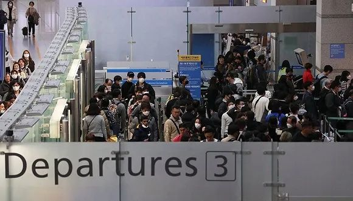

韩国出现超级传播事件，82例确诊患者曾参与千人教会活动
原文链接 备份链接 澎湃新闻记者 刘栋 实习生 董安琪 新冠病毒疫情在韩国的发展突然加速。 2月20日，韩国新增53例确诊病例，超过了过去一个月所有确诊病例总和。21日上午，韩国疾病预防控制中心（KCDC）最新通报称，再新增52例确诊病 …

仁川国际机场。图片来源：Yonhap
记者：潘金花
“
文在寅强调，“最大程度封锁”措施并非封堵和围困该地区，而是最大限度阻断疫情扩散，有关部门需争取使疫情拐点在本周之内到来。
”
韩国中央防疫对策本部25日通报说，截至当天下午4时，韩国较当天上午9时新增84例新冠病毒感染病例，累计确诊977例，死亡增至10例，治愈22例。在当天新增的144例病例中，分别有60例和56例来自集中爆发的大邱和庆北地区。
韩国中央防疫对策本部长郑银敬25日在记者会上表示，第9例死亡病例曾接触新天地大邱教会确诊病例，死因和感染途径尚不明确。
据悉，第9例死亡病例是1951年生的女性，因腹胀前往庆尚北道漆谷庆北医院急诊室就医，此后因出现肺炎症状而接受新冠病毒检测，其于24日下午死亡，当晚病毒检测结果呈阳性。第10例死亡病例则为1962年生的男性，初步了解与清道大南医院有关。
在截至当天上午9时通报的8名死亡病例中，除了与新天地教会有关的第38例患者外，其余7人中有6人与清道大南医院有关，1人是在庆尚北道庆州的自家中被发现身亡的41岁男性。
目前，韩国超八成确诊病例集中在大邱和庆尚北道这两个相邻地区，分别有两个主要的传染发生地，新天地大邱教会和庆尚北道清道郡大南医院。
据中央防疫对策本部25日下午通报，在截至当天上午9点韩国累计确诊的893例新冠肺炎病例中，有499例来自大邱，225例来自庆尚北道，占比81.1%；分别有501例与113例与新天地大邱教会及清道郡大南医院有关，占比68.8%。
据《朝鲜日报》25日报道，庆尚北道青松郡一处教导所（即监狱）已有一名狱警确诊新冠肺炎，这是韩国监狱首例新冠肺炎确诊病例。
据了解，该狱警是新天地大邱教会的信徒，22日晚上发烧，24日确诊感染，目前被隔离在大邱的家中。韩国政府25日已表示，将对“新天地”所有信徒（约21.5万人）进行新冠肺炎情况调查，并随时公开结果。
此外，韩国航空界、国防部与军队也出现了确诊或疑似病例。韩国航空业界25日透露，大韩航空1名客舱乘务员被确诊感染新冠肺炎。大韩航空已暂时关闭仁川机场的乘务员办公室，确诊乘务员乘坐的航班和感染途径等正在调查确认中。
韩国国防部当天也表示，在一位媒体摄影记者因出现疑似病毒感染症状而入院后，国防部将暂时关闭记者室以及新闻发布厅至周三（26日）。该记者的检测结果将于今天晚些时候公布。《中央日报》称，国防部因疫情关闭两处办公室尚属首次。
截至25日上午9点，韩国军队共出现13例新冠肺炎确诊病例，包括陆军10例、海军1例、空军1例、海军陆战队1例，较前一日未有变化。由于部队内的二次感染可以视为大规模感染的前兆，截至昨日，韩国军队内已有7500余人被隔离。
据《朝鲜日报》报道，隔离人员中还包括曾访问大邱和庆北地区的20多名国防部大楼职员。
截至目前，除确诊患者外，韩国接受新冠病毒检测的人数累计39327人，其中25447人的检测结果呈阴性，其余13880人的结果还未出炉。
 来源：韩国中央防疫对策本部
来源：韩国中央防疫对策本部
韩国执政党、政府和青瓦台25日已将大邱和庆北两地划为特别管控区，将采取超强“封锁措施”力阻疫情蔓延。
但执政的共同民主党首席发言人洪翼杓向媒体群发短信称，“最大程度封锁”意味着补强织密防疫网，阻断疫情在社区扩散，并不是说要完全“封市封道”禁止出入。
韩国总统文在寅25日也表示，拟对大邱和庆北地区采取的“最大程度封锁”措施并非封堵和围困该地区，而意为最大限度阻断疫情扩散。
韩国中央灾难安全对策本部第一总括协调官金刚立当天也在中央政府世宗办公楼开例行记者会澄清，这不是“武汉式防疫”。防疫策略可分为“堵”和“疏”两类，前者是指在疫情初期限制来自疫区的人员入境，尽快寻找并隔离接触病例的人员，以防疫情进一步扩散，而“最大程度封锁”措施就是要在大邱地区最大程度地启动“堵”的策略。
文在寅25日在大邱市厅召开的大邱地区特别对策会议上强调，阻止疫情蔓延的关键在于时间和速度，有关部门需争取使疫情拐点在本周之内到来。
文在寅表示，政府将投入军警和民间医疗人力资源，启动全方位支援体系，全力抗击新冠疫情。国务总理丁世均将作为中央灾难安全对策本部长从当晚起在当地指挥相关防疫工作。政府还将为大邱和庆北地区提供财政支持，解决当地居民面临的各种困难，动用一切可用手段，确保疫情尽快得到控制。
据韩联社报道，为解决新冠疫情升级导致的口罩紧缺问题，韩国政府将从26日零时至4月30日实施紧急调整口罩和洗手消毒液供应等措施，从26日起将全面禁止销售商出口口罩，生产商的出口量也限制在当天生产量的10%以内。
据韩国外交部消息，截至目前，禁止来自韩国的人员入境的国家和地区共7个，包括以色列、巴林、约旦、基里巴斯、萨摩亚、美属萨摩亚、中国香港。中国澳门、新加坡、泰国、密克罗尼西亚、英国、哈萨克斯坦、土库曼斯坦、阿曼、卡塔尔、乌干达10个国家和地区则加大对从韩国入境人员的检疫力度。

原文链接 备份链接 澎湃新闻记者 刘栋 实习生 董安琪 新冠病毒疫情在韩国的发展突然加速。 2月20日，韩国新增53例确诊病例，超过了过去一个月所有确诊病例总和。21日上午，韩国疾病预防控制中心（KCDC）最新通报称，再新增52例确诊病 …
原文链接 备份链接 韩国中央防疫对策本部25日通报，截至当地时间当天下午4时，韩国较当天上午9时新增84例新冠肺炎确诊病例，累计确诊病例达977例，共出现10例死亡病例。与前一天下午4时相比，一天内增加144例。 韩国总统文在寅25日表 …
原文链接 备份链接 “若不能有效阻断社区传播， 大邱疫情很可能扩散至全国” 2月24日，首尔市举行紧急会议，称将采取“先发制人”的措施遏制疫情，包括设立24小时运行的筛查中心，让医护人员在此检测疑似病例。图为首尔市市长朴元淳（右二）在会议 …
原文链接 备份链接 *************▲*************2月23日，在韩国首尔，身着韩服的游客在景福宫游览。 （新华社/法新/图） 全文共2759字，阅读大约需要7分钟。 随着“31号”超级传播者的出现，新冠病毒在韩国 …
原文链接 备份链接 IMF认为，若一切向好的方向发展，中国经济有望从二季度开始恢复正常。近日个别国家和地区确诊病例激增，确诊首例新冠病毒感染病例的国家和地区也在增加，是新感染群体的感染源越来越难以查明？还是疫情传播到了某个新的临界点？ …